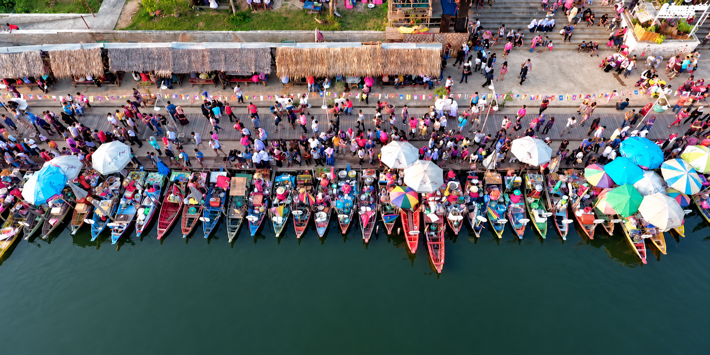
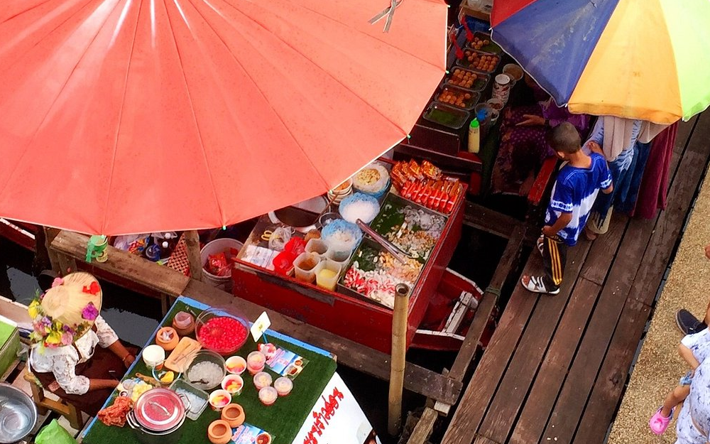

ตลาดน้ำเชิงวัฒนธรรมแห่งแรกของภาคใต้

ตลาดน้ำคลองแห ตั้งอยู่ในเขตเทศบาลเมืองคลองแห อำเภอหาดใหญ่ จังหวัดสงขลา เป็นตลาดน้ำเชิงวัฒนธรรมแห่งแรกและแห่งเดียวของภาคใต้ มีความยาวของตลาดประมาณ 200 เมตร ตั้งอยู่ริมฝั่งคลองตรงข้ามกับวัดคลองแห
ลักษณะพิเศษคือการผสมผสานระหว่าง ตลาดน้ำ ที่จำหน่ายสินค้าในเรือ และ ตลาดโบราณ ที่จำหน่ายสินค้าบนบก ทำให้ได้สัมผัสทั้งวิถีชีวิตริมน้ำและบรรยากาศตลาดท้องถิ่น

เปิดให้บริการทุกวัน ศุกร์ เสาร์ และอาทิตย์ เวลาประมาณ 13.00 – 21.00 น. (ควรตรวจสอบหน้าเพจทางการก่อนไป เพื่อความแน่นอน)
ตั้งอยู่ที่อำเภอหาดใหญ่ สามารถขับรถหรือใช้รถสาธารณะจากตัวเมืองหาดใหญ่ได้สะดวก มีที่จอดรถค่อนข้างกว้างขวาง
ที่ตั้ง:
ต.คลองแห อ.หาดใหญ่ จ.สงขลา
เปิด:
ศุกร์–อาทิตย์ 13.00–21.00 น.
จุดเด่น:
ตลาดน้ำแห่งแรกของภาคใต้ • ของกินอร่อย
แผนที่สามารถซูมและเลื่อนดูได้ตามต้องการ